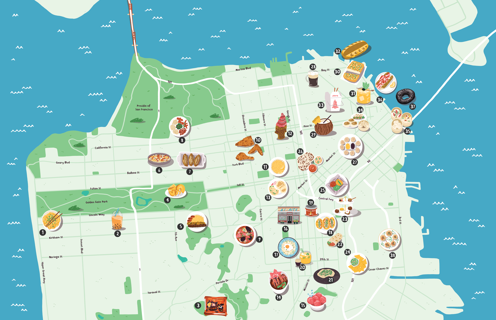
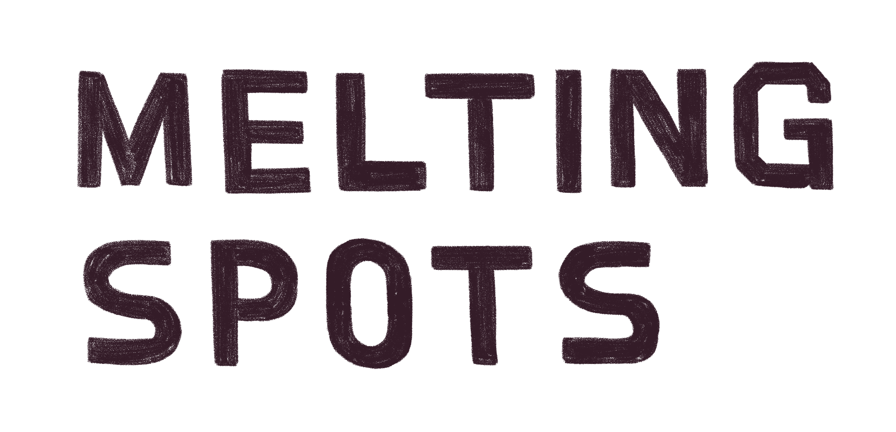
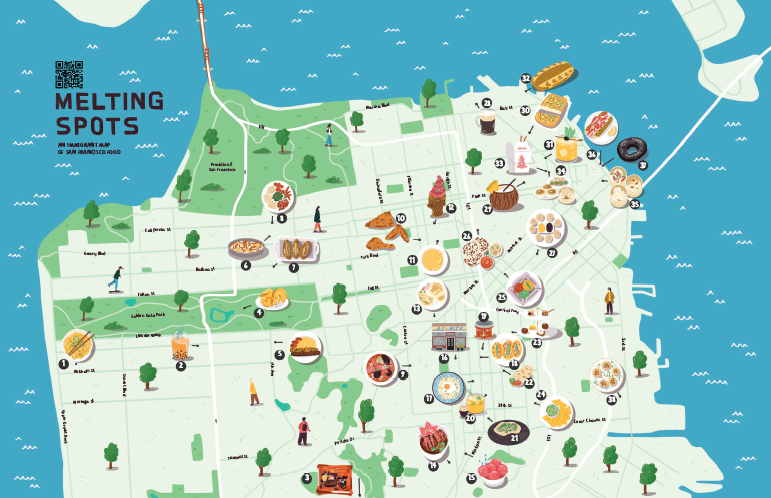

Join the California Migration Museum on a bite-sized journey across San Francisco’s food scene. From Gold Rush saloons to Instagram popups, and Rice-a- Roni to Mission burritos, here are 38 stories exploring how immigrants have shaped the city and fed its residents since 1849.
The Melting Spots podcast takes listeners through more than 2 centuries of SF’s food and immigrant history, weaving together the stories of 38 immigrant chefs and businesses. Listen now on Apple Podcasts, Spotify, wherever you get your podcasts or here.

The Melting Spots map, created by illustrator Alex Foster, is your menu to some of SF’s best immigrant-inspired cuisine. A limited run of editioned and signed map prints are available by donation.
Use the map below as your menu to the city — tap the icons to learn more, then head out and taste the stories for yourself. Buen Provecho!